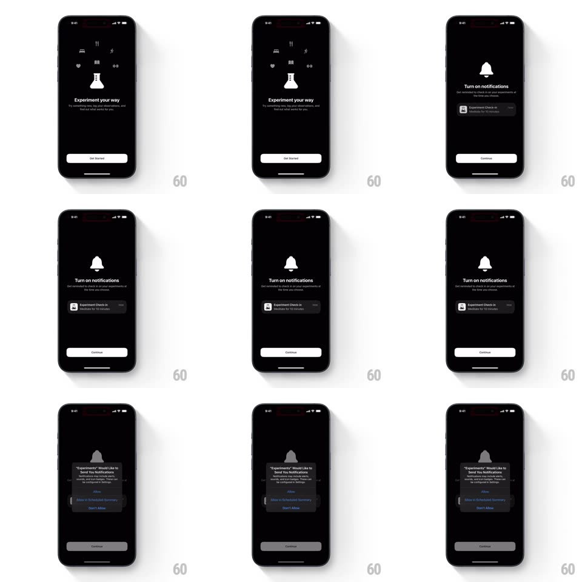

Media
Frame-by-frame

Rebuild this animation 1:1: Easlo Experiments' onboarding - a dark splash with a flask icon ringed by orbiting habit glyphs, then a notifications screen with a bell and a sample check-in card, ending on the system permission prompt.

Rebuild this animation 1:1: Easlo Experiments' onboarding - a dark splash with a flask icon ringed by orbiting habit glyphs, then a notifications screen with a bell and a sample check-in card, ending on the system permission prompt. ## Integration Integration: stack-agnostic spec - springs given as stiffness/damping, timed motions as duration + curve; map every value to your framework and animation library of choice. ## Scene Black onboarding. Splash: a white flask at center orbited by six small glyphs (bed, cutlery, runner, heart, book, dumbbell), "Experiment your way" with subline and a Get Started pill. Screen two: a bell icon, "Turn on notifications" with subline, a sample "Experiment Check-in" notification card, and Continue. The iOS permission alert overlays the dimmed screen. ## Motion spec Pattern: orbiting splash to permission flow, ~500ms per step. - Splash: the flask fades in (300ms) while the glyphs pop onto their orbit one by one (spring ~440/18, 60ms stagger) and then drift slowly around it (30s revolution). - Copy: headline and subline fade up 12px (250ms each, staggered 100ms); Get Started slides up (300ms). - Step change: screens crossfade with a 20px slide (300ms); the bell pops (spring ~400/18) and the sample card slides in from the right (300ms). - Continue triggers the system dialog; the background dims to 50% (200ms). ## Calibration - The orbit is continuous and slow - a decorative drift, not a spinner. - The sample notification card looks like a real iOS notification. ## Reduced motion Glyphs appear statically; screens crossfade. ## Don't miss - The orbiting glyphs are habit categories - six distinct icons, not dots. - The bell is the only colored accent on an otherwise monochrome flow.